Stats
Feb 2026
Minor Web Development
Words
Things that describe me
- Cycling
- Sudoku
- Writing
- Nature
- Films
- Mountains
- Eating Healthy
- Reading
Interesting Facts
Did you know?
- Mango is my favorite fruit
- Courgette is my favorite vegetable
- I love soup
- I love going to bed on time
- I use the word 'fantastic' a lot
My name is Sela
Like many teenagers, I once had to choose what I wanted to study. With so many options, I felt overwhelmed and unsure. So, I decided to take a few gap years to explore myself and life. You can see a part of what I discovered in the folders above and pictures that follow. During my time for life, one thing slowly became clear: I wanted to build websites.
That led me to Communication and Multimedia Design. There, my interest became more concrete. I chose Tech and Web Development as my specialisations and started turning ideas into real, working websites. By working on different projects, I learned how to combine structure, design, and interaction in a way that feels clear and intentional. This website reflects who I am as a person and as a web developer: curious, detail-focused, and always learning. Within this project, I want to strengthen my understanding of JavaScript beyond the basics. Moving from simply making things work to truly understanding why they work. At the same time, I want to deepen my knowledge of CSS by improving how I structure layouts, use positioning and responsive design, and create cleaner, more consistent styling.
I'm excited about the next steps in this journey and about challenging myself to grow further as a web developer.
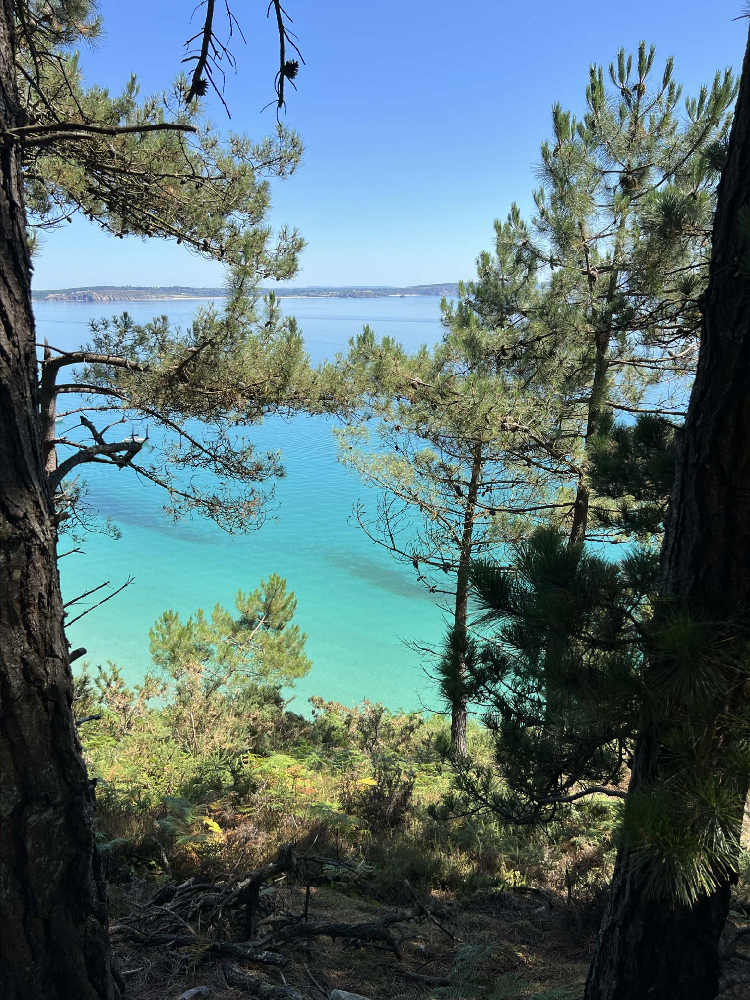
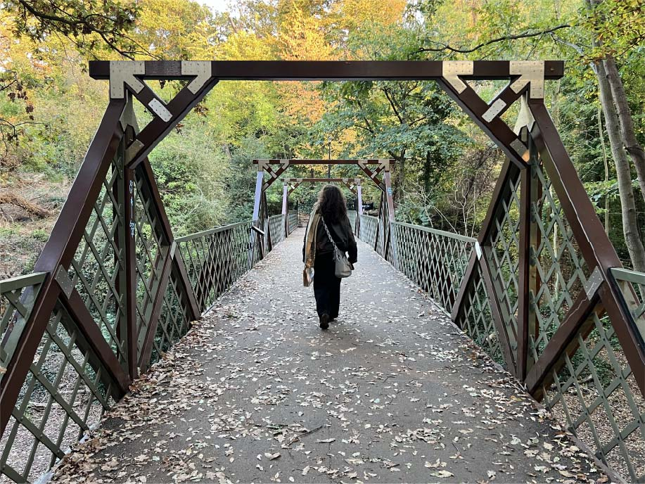
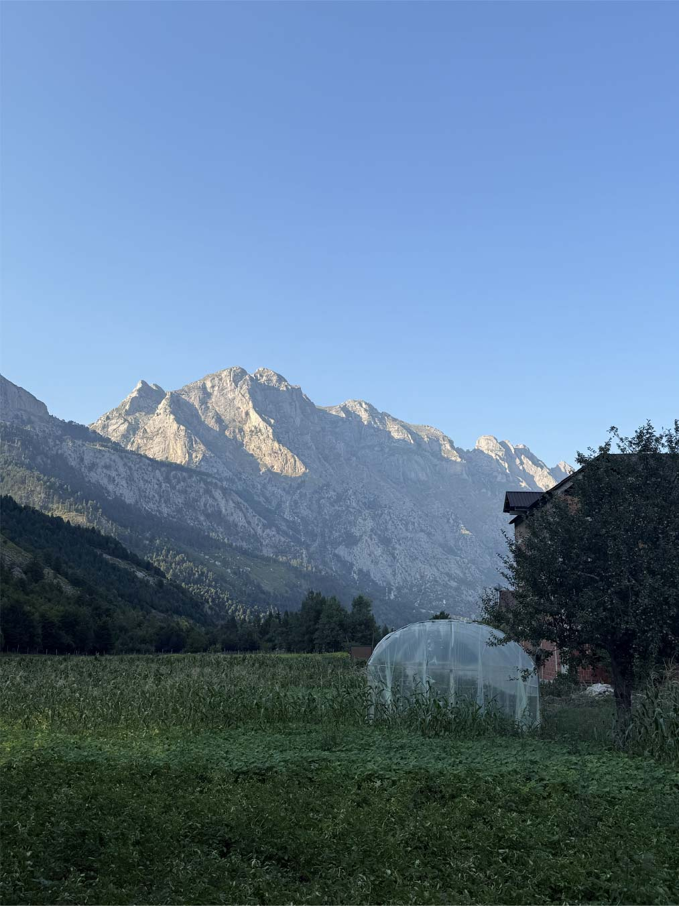
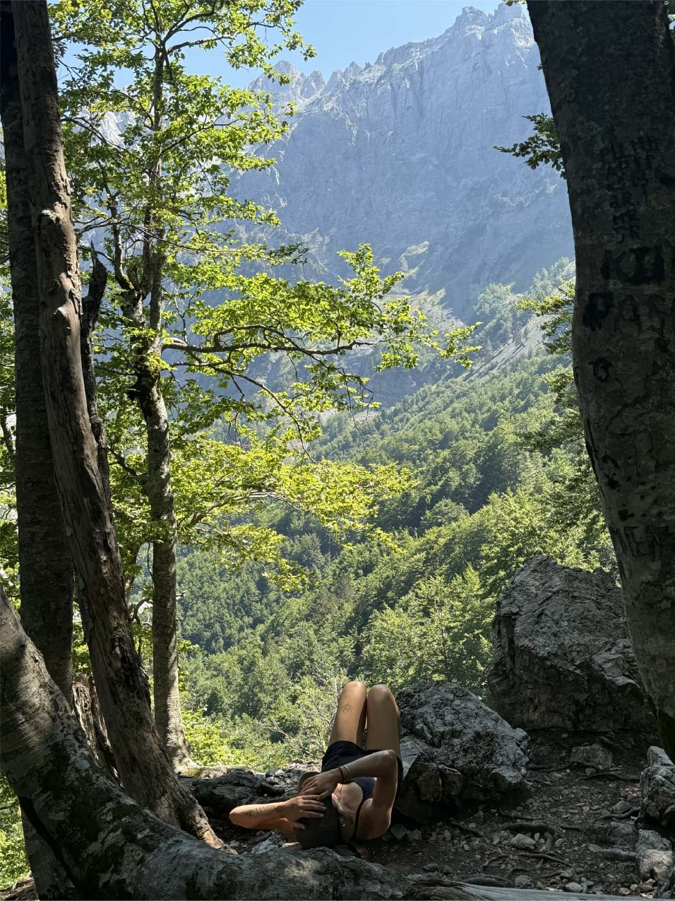
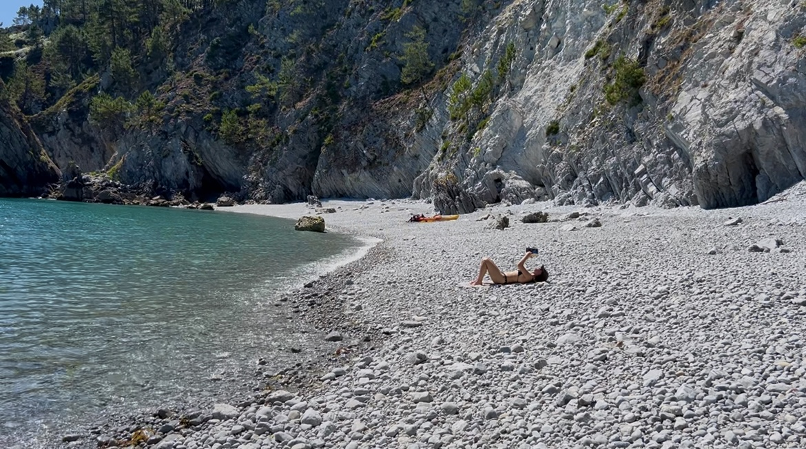
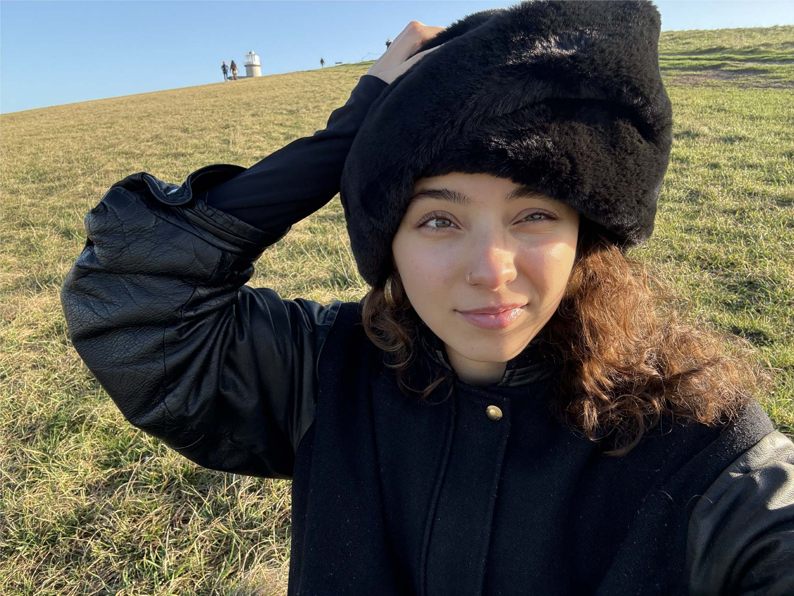
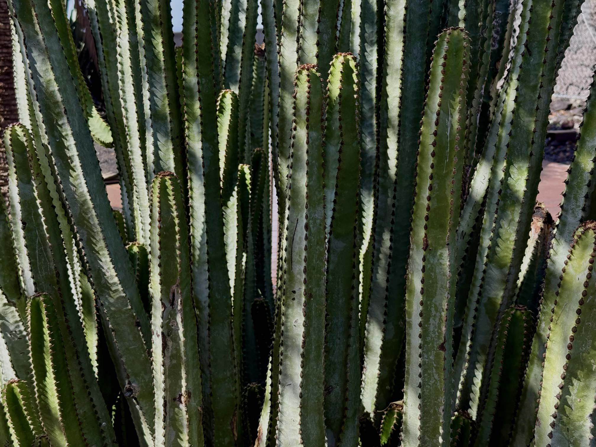
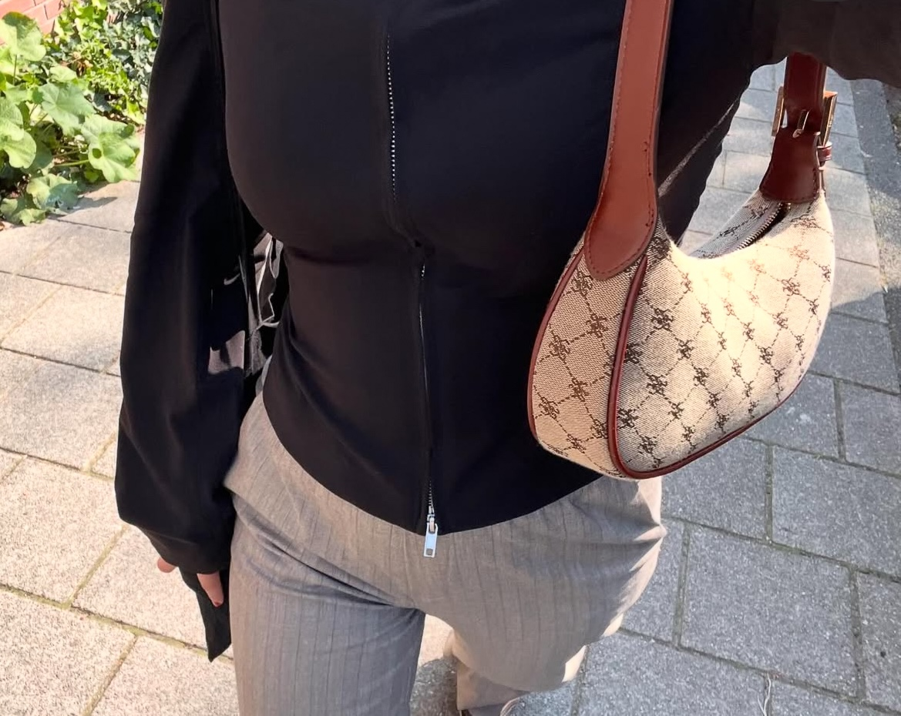
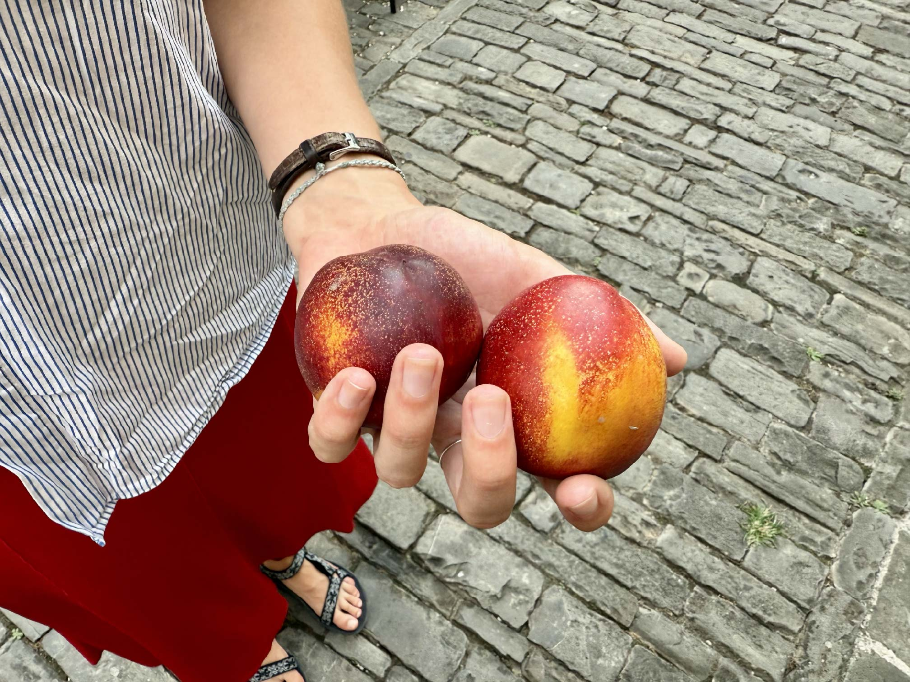
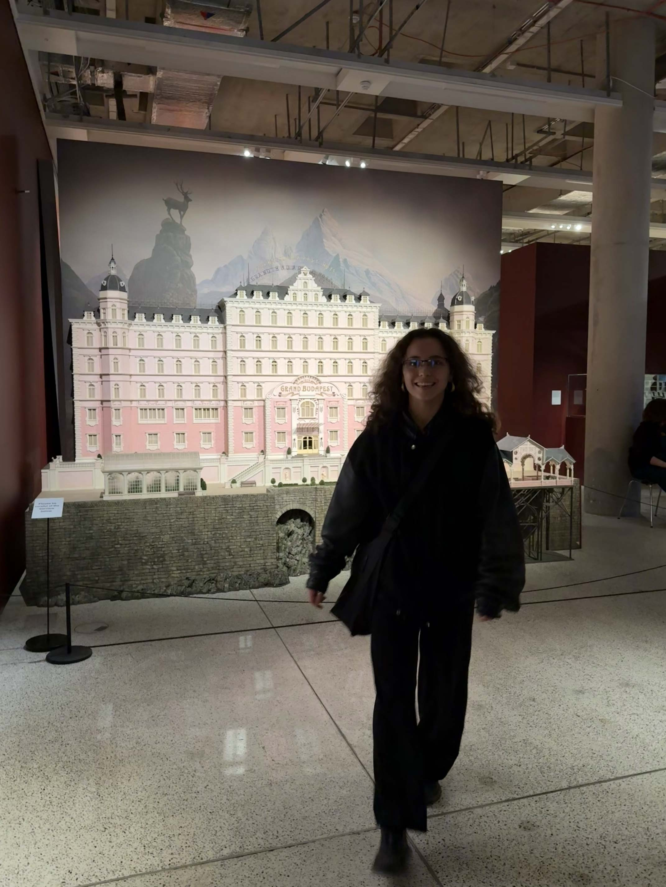
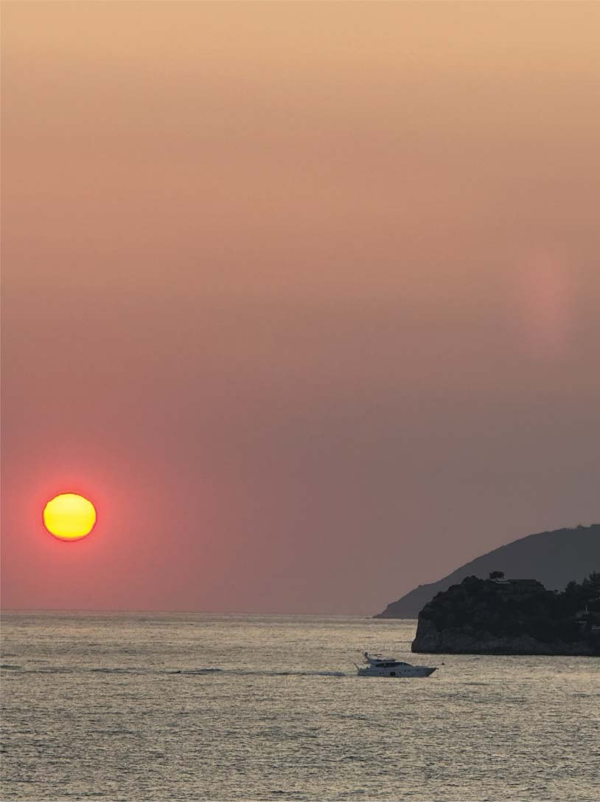